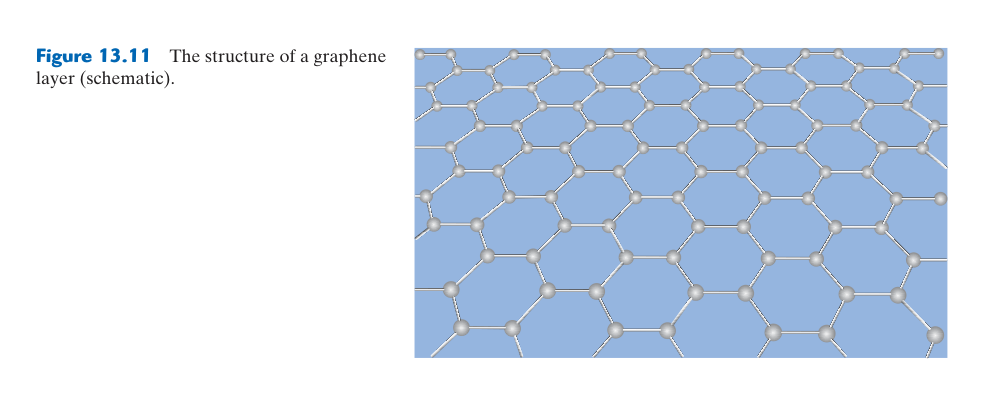
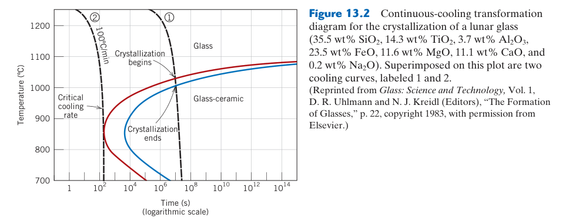
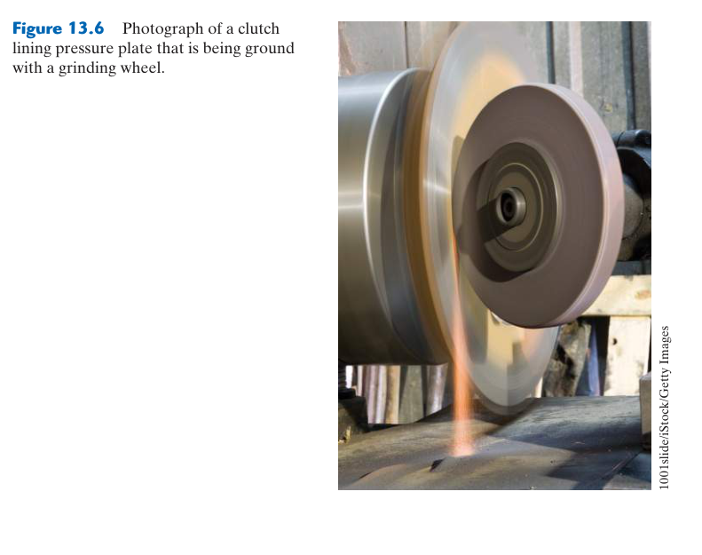
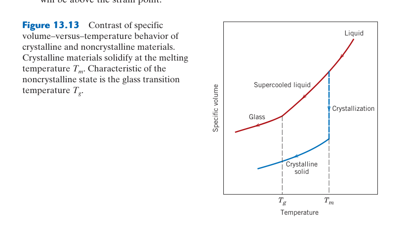

第 13 章 陶瓷的應用與加工
本章預覽
核心問題
陶瓷的熔點極高（Al₂O₃ 2054°C、SiC 2730°C），無法像金屬一樣熔煉鑄造。那麼玻璃瓶、馬桶、火花塞陶瓷絕緣體、碳纖維複合材料的碳纖維是怎麼做出來的？為什麼有些陶瓷（如玻璃）是透明的而有些不是？為什麼 ZrO₂ 的韌性遠高於其他陶瓷？本章涵蓋從傳統陶瓷（玻璃、黏土、水泥）到先進陶瓷（Si₃N₄、 ZrO₂、SiC）的應用和加工方法，並解釋為什麼不同的應用選擇不同的陶瓷材料。
10 條關鍵概念
- 玻璃：非晶固體。從熔融態冷卻形成——無明確熔點，只有玻璃轉變溫度 $T_g$。透明性來自非晶結構中無晶界散射
- 玻璃陶瓷：控制結晶（成核+成長）使玻璃部分結晶化——零孔隙率、極低（甚至負）熱膨脹係數
- 黏土產品：加水塑性成形 → 乾燥 → 燒結。燒結驅動力：降低表面能。從建築磚到衛生陶瓷涵蓋極廣
- 耐火材料：耐高溫（>1500°C）且不軟化——鋼鐵、玻璃、水泥工業的基礎
- 先進陶瓷：Si₃N₄、SiC、 ZrO₂、Al₂O₃——切削工具、燃氣渦輪、人工關節、防彈裝甲
- 相變化韌化： ZrO₂ 的 $t \\to m$ 相變伴隨體積膨脹 → 壓縮裂紋尖端 → 阻止傳播——這是陶瓷韌化的關鍵機制
- 水泥與混凝土：C-S-H 凝膠的奈米纖維網絡提供強度。水合反應持續數月——混凝土強度隨時間「養護」增長
- 粉末加工路線：製粉 → 成形（green body）→ 燒結 → 精加工。幾乎所有陶瓷都走這條路
- 燒結驅動力：降低總表面能。粉末的總表面積巨大 → 燒結時擴散使顆粒結合、孔隙收縮
- 加工–性質–應用連結：同一種陶瓷（如 Al₂O₃），粉末粒徑和燒結條件不同 → 微觀結構不同 → 適用的場合完全不同
🧭 本章推理地圖
共同限制：多數陶瓷熔點高且塑性差（Ch12）→ 製程必須配合材料的成鍵與緻密化方式（§13.2、§13.11）。
- 玻璃路徑：熔體冷卻時抑制結晶（§13.2）→ 得到非晶玻璃（§13.2）；再控制成核與成長 → 得到玻璃陶瓷（§13.2 延伸內容）。
- 粉末路徑：粉末成形（§13.11）→ 燒結擴散形成頸部並降低孔隙（§13.11）→ 粒徑、溫度與時間控制微觀結構及強度（§13.6、§13.11）。
- 水泥路徑：粉體與水反應生成水化產物（§13.6 後的水泥單元）→ 室溫下逐步鍵結與硬化。
比較各路徑如何控制玻璃相、晶粒與孔隙（§13.2、§13.6、§13.11）→ 由用途反選原料、成形及熱處理方法（§13.11）。
先備知識橋接
- Ch12：陶瓷晶體結構（AX、AₘXₚ、AₘBₙXₚ、鈣鈦礦、尖晶石、矽酸鹽）——本章會反覆引用這些結構名稱
- Ch12：配位數與 $r_C/r_A$ 關係——理解為什麼某些陽離子能進入玻璃網絡
- Ch5：擴散機制——燒結的本質是擴散控制的物質傳輸
- Ch8：Griffith 裂紋理論與 $K_{Ic}$——理解陶瓷強度為何遠低於理論值，以及韌化策略的物理基礎
13.2 玻璃——結構與性質


性質取決於網絡連通與熱歷史：冷卻速度會改變玻璃的假想溫度與自由體積，使同一成分也可能具有不同密度、折射率與鬆弛行為。網絡修飾劑降低熔製溫度，卻常提高熱膨脹並降低化學耐久性。
玻璃——凍結的液體
玻璃轉變是動力學區間：$T_g$ 會隨冷卻或量測速率改變，並非像晶體熔點般唯一。快速冷卻使結構在較高溫狀態被凍結，慢冷則有更多時間鬆弛；比較資料時需說明測試方法與升降溫速率。
玻璃最獨特的特徵是它沒有晶體結構——原子排列缺乏長程有序性。從熱力學角度，玻璃是動力學凍結的過冷液體：當熔融的 SiO₂ 快速冷卻時，黏度急劇上升（在 $T_g$ 附近從 ~10¹² Pa·s 升至 >10¹⁶ Pa·s），原子沒有足夠的時間擴散並排列成規則晶體，結構被「凍結」在無序狀態。因此玻璃沒有明確的熔點——加熱時它逐漸軟化而非在特定溫度突然融化。$T_g$（玻璃轉變溫度）標誌著材料從剛性固體轉變為過冷液體的區間，對於鈉鈣玻璃（窗戶玻璃），$T_g$ 約為 520–550°C。
玻璃的透明性是非晶結構的直接結果：多晶陶瓷不透明是因為晶界散射光線（每穿過一個晶界，部分光被反射/折射），而玻璃中沒有晶界，可見光可以無阻礙地穿透。但玻璃對紫外線不透明——因為紫外光子的能量足以激發玻璃中的電子躍遷。
商業玻璃的主要成分是 SiO₂（砂，~70%），加上網絡修飾劑（network modifiers）和中間氧化物（intermediate oxides）。Na₂O 和 CaO 作為修飾劑——它們的陽離子（Na⁺、Ca²⁺）打斷 Si-O-Si 橋接鍵，產生非橋接氧（non-bridging oxygen），降低網絡的連通性 → 降低黏度和軟化溫度（純 SiO₂ 的軟化溫度 >1600°C，添加 25% Na₂O 後降至 ~700°C）。Al₂O₃ 作為中間氧化物——可替代 Si⁴⁺ 進入網絡（形成 AlO₄⁻ 四面體，需 Na⁺ 提供電荷補償），增加網絡的穩定性。
玻璃的製造包含以下步驟：原料混合（砂 + 蘇打灰 Na₂CO₃ + 石灰石 CaCO₃ + 碎玻璃 cullet）→ 熔融（~1500°C，氣體/液體反應釋放 CO₂）→ 成形。平板玻璃（窗戶、汽車擋風玻璃）的主要成形方法是浮式法（float process）：熔融玻璃連續倒在熔融錫液（~1000°C）表面上——玻璃浮在錫上、自然攤平形成完美平面的上下表面，無需後續研磨拋光。容器玻璃（瓶子、罐子）用吹製或壓製成形。所有玻璃製品成形後都必須退火（annealing）——緩慢冷卻（數小時至數天）以消除熱應力，否則稍有溫差就會自發破裂。
玻璃的理論強度極高——Si-O 共價鍵的強度對應 ~10 GPa 的斷裂強度。然而實際玻璃的強度僅 ~50–100 MPa，差距高達 100–200 倍。原因與所有陶瓷相同：表面微裂紋。Griffith 理論（Ch8）直接適用：即使肉眼看不見的表面刮痕（~1–10 μm）也能將應力放大數十倍。這就是為什麼新拉的玻璃纖維（表面無缺陷）強度可達 ~3.5 GPa。兩種強化策略：熱強化（tempering）——加熱後快速冷卻表面（噴射空氣），表面先凝固收縮而內部仍熱軟，內部後冷卻時收縮 → 表面產生壓縮殘留應力 → 抵消外加拉伸應力；化學強化（ion exchange）——將玻璃浸入熔融 KNO₃，較小的 Na⁺ 擴散出去、較大的 K⁺ 擴散進來（「擠」進表面），表面體積膨脹受限 → 產生壓縮應力（如 Gorilla® Glass）。
你可能聽過「古老教堂的彩色玻璃窗底部比較厚，因為玻璃經過幾百年慢慢往下流」。這是一個都市傳說。室溫下的玻璃黏度超過 10¹⁸ Pa·s——即使經過數十億年也不會有可觀測的流動。窗玻璃底部較厚是因為中世紀的製造工藝限制——當時的玻璃吹製法無法做出均勻厚度，工匠安裝時自然把較厚的一端放在底部以求穩定。
玻璃陶瓷——有控制的結晶
成核與成長需分開控制：先建立大量晶核，再升溫促進成長，可避免少數晶粒粗化。晶相與殘餘玻璃的膨脹係數若不匹配，會形成微裂紋或殘留應力，因此結晶分率並非越高越好。
玻璃陶瓷（glass-ceramics）的製造始於玻璃，但透過特殊的熱處理使其部分結晶化。關鍵步驟：（1）在玻璃配方中加入成核劑（TiO₂、 ZrO₂、P₂O₅，約 2–10 vol%）；（2）進行兩階段熱處理——第一階段在略高於 $T_g$ 的溫度（~500–700°C）進行成核，形成大量（~10¹⁵–10¹⁸/m³）的微小晶核；第二階段在較高溫度（~700–1100°C）進行晶體成長，晶核長成直徑 <1 μm 的均勻細晶粒。最終產品含 ~50–95 vol% 的結晶相，剩餘為殘留玻璃相。
玻璃陶瓷的獨特優勢在於它們繼承了玻璃的零孔隙率但克服了脆性。因為是從緻密玻璃內部結晶（而非從粉末燒結），沒有殘留孔隙——這對高溫結構應用至關重要。更重要的是，透過選擇特定的結晶相，可以將熱膨脹係數調到極低甚至負膨脹。例如鋰鋁矽酸鹽（LAS, Li₂O-Al₂O₃-SiO₂） 玻璃陶瓷中的 β-鋰霞石（β-eucryptite, LiAlSiO₄）在 c 軸方向隨溫度升高而收縮（負熱膨脹），透過控制晶粒方向可以使整體 CTE 接近零。Zerodur®（用於天文望遠鏡鏡坯）的 CTE 在 0–50°C 範圍內幾乎為零——這對天文觀測至關重要，因為即使是微小的熱脹縮也會使鏡面失焦。
📝 自編概念例：玻璃 vs 玻璃陶瓷的熱衝擊比較
情境：將一個普通鈉鈣玻璃杯（CTE ≈ 9×10⁻⁶ /°C）和一個 CorningWare® 玻璃陶瓷烤盤（CTE ≈ 0.5×10⁻⁶ /°C）從冰箱（5°C）取出直接放入烤箱（200°C）。
熱應力估算：快速加熱時表面比內部先膨脹，產生拉伸應力 $\\sigma \\approx E \\alpha \\Delta T$。鈉鈣玻璃：$E \\approx 70$ GPa，$\\sigma \\approx 70 \\times 10^9 \\times 9 \\times 10^{-6} \\times 195 = 123$ MPa——遠超過玻璃的實際強度（~50–100 MPa）→ 必裂。 玻璃陶瓷：$E \\approx 90$ GPa，$\\sigma \\approx 90 \\times 10^9 \\times 0.5 \\times 10^{-6} \\times 195 = 8.8$ MPa——遠低於彎曲強度（~100–200 MPa）→ 安全。
關鍵洞察：材料耐熱衝擊性由 $\\sigma_f / (E\\alpha)$ 決定（熱應力參數 $R$）。 玻璃陶瓷透過極低 $\\alpha$ 彌補陶瓷本質上的低 $K_{Ic}$，達到了金屬才有的耐熱衝擊能力。
黏土產品——人類最古老的工程材料
乾燥缺陷往往早於燒成：表面失水太快會先收縮並約束濕潤內部，形成翹曲與裂紋；顆粒級配、含水量、濕度與厚度都需控制。燒後尺寸偏差常是成形密度不均一路累積的結果。
黏土礦物的基本結構單元是矽氧四面體層和鋁氧八面體層的組合（Ch12）。高嶺石（kaolinite, Al₂Si₂O₅(OH)₄）是最常見的黏土礦物——由一層四面體和一層八面體交替堆疊（1:1 層狀結構），層間以氫鍵連結。加水後，水分子進入層狀顆粒之間形成潤滑水層——這就是黏土可塑性的來源。顆粒之間的毛細力和水膜的潤滑使黏土可以被任意塑形而不破裂。
傳統黏土產品的製造流程為：原料製備（研磨、篩選、混合）→ 成形（手捏、拉坯、擠製、壓製）→ 乾燥（去除物理水，緩慢進行以防開裂——這個階段收縮可達 5–10%）→ 燒結（firing，~900–1400°C取決於產品）。燒結時發生的關鍵變化：低溫階段（~500–700°C）——高嶺石脫羥基（失去 OH⁻，轉變為非晶的偏高嶺石 metakaolin）；高溫階段（>900°C）——部分熔融形成玻璃相（液相燒結），玻璃相填充孔隙、將殘留晶粒黏合在一起。燒結冷卻後，微觀結構為：殘留晶粒（莫來石 mullite, 3Al₂O₃·2SiO₂——針狀，提供強度）+ 玻璃基質（填充孔隙）+ 殘留閉孔隙。燒結時體積收縮可達 10–20%，這是設計成形尺寸時必須預先補償的。
黏土產品的範圍極廣，差異在於原料純度和燒結溫度：建築磚（最低純度，~900°C，紅色來自鐵氧化物，孔隙率 ~20–30%）→ 屋瓦和排水管（~1000–1100°C，上釉防滲水）→ 衛生陶瓷（洗臉盆、馬桶——瓷器 vitreous china，~1200–1300°C，吸水率 <0.5%，表面光澤來自高溫玻璃相充分流動）。瓷器的高溫燒結使玻璃相充分填充孔隙，達到極低的吸水率——這對衛生產品至關重要。
耐火材料——高溫工業的基石
化學相容性比單看熔點重要：爐渣滲入孔隙後可形成低熔點反應物，即使耐火磚尚未熔化也會快速侵蝕。選材需配合爐渣酸鹼度、氧勢、熱循環與沖刷，並控制顯氣孔率。
耐火材料（refractories）是能夠在高於 1500°C 的溫度下保持結構完整性的陶瓷材料——它們是鋼鐵、玻璃、水泥、石化等行業的基礎設施材料。一個典型的煉鋼轉爐內襯承受的條件極其嚴苛：溫度 ~1650°C（高於大多數金屬的熔點）、腐蝕性爐渣（CaO-SiO₂-FeO 液體）、急劇的溫度變化（每次出鋼和裝料之間）、以及鋼液和爐渣的機械沖刷。
耐火材料按化學性質分類：酸性耐火材料——以 SiO₂ 為主（矽石 brick，含 >93% SiO₂），用於玻璃窯和焦爐（與酸性爐渣相容）；鹼性耐火材料——以 MgO（氧化鎂，方鎂石 periclase）或 MgO-CaO（白雲石 dolomite）為主，用於煉鋼轉爐和電弧爐（鋼渣是鹼性的——CaO/SiO₂ 比 >2）；中性耐火材料——Al₂O₃（高鋁礬土）、鉻鐵礦（chrome-magnesite）、SiC（碳化矽），可與酸性和鹼性爐渣共存。MgO-C 磚（氧化鎂 + 10–20% 石墨片）是煉鋼轉爐的關鍵材料——MgO 提供抗渣侵蝕能力，石墨提供高導熱率（將熱從熱面快速導走，降低熱衝擊）和抗爐渣潤濕性（爐渣不易附著在碳表面）。
耐火材料的失效通常不是因為熔化（熔點遠高於使用溫度），而是爐渣侵蝕（slag attack）：液態爐渣滲入耐火材料的孔隙和晶界，溶解耐火材料顆粒或與之反應形成低熔點化合物。抗侵蝕策略包括：降低孔隙率（緻密燒結）、選擇不與爐渣反應的化學成分（鹼性爐渣 → 鹼性耐火材料）、加入不潤濕成分（石墨）。此外，熱剝落（thermal spalling）——急劇溫度變化導致的裂紋——是另一個主要失效模式，因此耐火材料需要低熱膨脹係數和高導熱率。
13.6 先進陶瓷——Al₂O₃, Si₃N₄, SiC, ZrO₂


氧化鋁（Al₂O₃）——最廣泛的工程陶瓷
純度與孔隙率改變應用層級：少量玻璃相可降低燒結成本，卻會降低高溫電阻與耐蝕性；殘留孔隙既集中應力也散射光。透明氧化鋁因此要求近乎完全緻密且晶粒均勻。
氧化鋁（alumina，或稱剛玉 corundum）是所有先進陶瓷中使用量最大的材料。它的晶體結構是六方最密堆積的 O²⁻，Al³⁺ 填入 2/3 的八面體間隙（Ch12）。這種緊密的離子堆積賦予 Al₂O₃ 優異的性質：高硬度（HV ~1500–2000，僅次於鑽石、c-BN、SiC 和 B₄C）、高彈性模數（~380 GPa）、良好的高溫強度保持率（在 1000°C 仍可維持室溫強度的 ~70%）、以及極佳的化學穩定性（不溶於大多數酸和鹼，除熱濃 H₃PO₄ 和熔融 NaOH 外）。
Al₂O₃ 的應用極其多元：火花塞絕緣體——利用其電絕緣性（電阻率 >10¹⁴ Ω·cm）和耐高溫；切削刀具（連同 TiC 或 SiC 晶鬚強化）——切削鎳基超合金和淬硬鋼時，陶瓷刀具可在比碳化鎢更高的速度下運作而不軟化；人工髖關節球頭——利用其耐磨性（對超高分量聚乙烯髖臼的磨損率極低）和生物惰性；透明氧化鋁（Lucalox®，添加 ~0.1% MgO 抑制晶粒異常生長、消除殘留孔隙）——用於高壓鈉燈燈管（需承受 >1000°C 的鈉蒸氣腐蝕）。
Al₂O₃ 在人體內的穩定性堪稱完美：不釋放離子、不引發免疫反應、不被體液腐蝕。這來自 Al-O 離子鍵的極高鍵能（~511 kJ/mol）和 Al₂O₃ 表面在含水環境中形成的穩定水合層。但有一個關鍵限制：Al₂O₃ 的彎曲強度（~400–600 MPa）和韌性（$K_{Ic} \\approx 3$–5 MPa·√m）意味著它不適合承受衝擊載荷——這就是為什麼髖關節球頭必須設計得足夠大（通常 ≥28 mm 直徑）以降低接觸應力，避免在體重下斷裂。
氮化矽（Si₃N₄）與碳化矽（SiC）——高溫結構陶瓷
氧化可保護也可破壞：緻密連續的 SiO₂ 膜可降低氧進入速率，但水蒸氣、熔鹽或低氧分壓可能使膜揮發或轉為主動氧化。實際溫度上限取決於氣氛與載荷，不是只看熔點。
Si₃N₄ 和 SiC 是共價鍵為主的陶瓷（Si-N 和 Si-C 的共價性比例高，%IC 分別約 30% 和 12%），這賦予它們極高的鍵結強度和高溫穩定性。兩者都需要燒結助劑才能緻密化——純共價鍵材料的自擴散係數極低（因為鍵結的方向性和強度使原子難以脫離晶格位置），必須添加少量氧化物（如 Y₂O₃、Al₂O₃、MgO）在晶界形成低熔點液相，透過液相燒結達到緻密化。這層殘留在晶界的玻璃相決定了材料的高溫性質——當使用溫度超過玻璃相的軟化點時，強度會急劇下降。
Si₃N₄ 的獨特優勢在於它形成了長柱狀 β-Si₃N₄ 晶粒的互鎖微觀結構——類似於原位生成的晶鬚複合材料。這種微觀結構使裂紋必須沿著曲折路徑傳播（裂紋偏轉、晶粒橋接、晶粒拔出），大幅提高了韌性（$K_{Ic}$ 可達 5–8 MPa·√m——在陶瓷中屬於高韌性）。應用包括：燃氣渦輪轉子（考驗高溫強度和抗熱衝擊）、混合陶瓷滾珠軸承（Si₃N₄ 滾珠 + 鋼內外圈——Si₃N₄ 的密度僅鋼的 40%，離心力大幅降低，轉速可提高 30–50%）、高溫熱交換器。
SiC 是硬度僅次於鑽石和立方 BN 的材料（Knoop 硬度 ~2500）。它的高導熱率（~120–270 W/m·K，比大多數金屬高）使其在需要散熱的高功率應用中極具價值——SiC 功率半導體元件（如 MOSFET）正在取代矽元件，因為 SiC 的寬能隙（~3.26 eV vs Si 的 1.12 eV）允許更高的工作溫度和更高效率的電力轉換。SiC 也是優異的磨料（砂紙、砂輪）和高溫熱交換器材料。
兩者在空氣中使用時，表面會在高溫下氧化。Si₃N₄ 的氧化反應：Si₃N₄ + 3O₂ → 3SiO₂ + 2N₂↑（形成保護性 SiO₂ 層——類似鋁的 Al₂O₃ 鈍化層）。SiC 的氧化分兩種情況：被動氧化（高氧分壓）——SiC + 2O₂ → SiO₂ + CO₂↑（形成保護性 SiO₂ 層）；主動氧化（低氧分壓和高溫）——SiC + O₂ → SiO↑ + CO↑（無保護層，材料快速消耗）。因此在設計太空梭熱防護系統（SiC 塗層的 C/C 複合材料）時，必須確保氧化環境在被動氧化範圍內。
氧化鋯（ ZrO₂）與相變化韌化
穩定劑存在最佳窗口：正方相太穩定時裂尖無法誘發轉變，太不穩定則會在加工或濕熱老化中提前轉為單斜相。晶粒尺寸、Y₂O₃ 分布與表面研磨都會改變亞穩定性。
ZrO₂ 是材料科學中最精彩的韌化故事。純 ZrO₂ 有三種晶體結構：立方（c，>2370°C）→ 正方（t，~1170–2370°C）→ 單斜（m，<1170°C）。冷卻時 t → m 相變伴隨 ~3–5% 的體積膨脹和 ~8% 的剪切應變——這個相變的應變巨大到足以在純 ZrO₂ 冷卻過程中引發粉碎性破裂。為了利用這個相變，必須添加穩定劑（Y₂O₃、MgO、CaO、CeO₂）——Y³⁺ 取代 Zr⁴⁺ 產生氧空位以維持電中性，降低了 t → m 相變溫度，使正方相可以在室溫下保持亞穩定。
相變化韌化（transformation toughening）的機制如下：裂紋尖端前方的高應力場誘發亞穩定的正方相 ZrO₂ 顆粒轉變為單斜相。相變伴隨的體積膨脹對裂紋尖端施加壓縮應力——必須做額外的功才能使裂紋繼續傳播 → 裂紋被「壓閉」。有效 $K_{Ic}$ 可達到 6–10 MPa·√m（比 Al₂O₃ 高出 2–3 倍），使 Y-TZP（yttria-stabilized tetragonal zirconia polycrystal）成為韌性最高的陶瓷之一。這就是為什麼 Y-TZP 陶瓷剪刀不會像其他陶瓷那樣輕易崩口。
ZrO₂ 的另一個關鍵應用是氧離子導體。Y₂O₃ 穩定 ZrO₂（YSZ）中的氧空位使 O²⁻ 離子可以在高溫（>600°C）下通過空位機制擴散（類似 Ch5 的空位擴散），成為氧離子導體。應用：汽車排氣管的氧感測器（lambda sensor）——YSZ 電解質一端暴露於排氣（低氧分壓），另一端暴露於大氣（固定高氧分壓），氧分壓差產生電壓信號（Nernst 方程式）→ ECU 根據電壓調整空燃比；固態氧化物燃料電池（SOFC）電解質——YSZ 將氧氣還原為 O²⁻、傳輸通過電解質、在另一側與氫氣反應產生電力和水。
📝 自編概念例：估算 Y-TZP 的相變化韌化貢獻
問題：沒有相變化韌化的 ZrO₂ 其 $K_{Ic} \\approx 3$ MPa·√m。相變誘發的壓縮應力約為 $\\sigma_c \\approx 1.2$ GPa，相變區寬度 $w \\approx 5$ μm。估算韌化增量 $\\Delta K$。
解：相變化韌化的貢獻可近似為 $\\Delta K \\approx \\eta E e^T V_f \\sqrt{w}$，或使用 McMeeking-Evans 模型更簡單的估算：$\\Delta K \\approx 0.22 E e^T V_f \\sqrt{w} / (1-\\nu)$，其中 $E \\approx 210$ GPa，相變體積應變 $e^T \\approx 0.04$，可相變的 $t$- ZrO₂ 體積分率 $V_f \\approx 0.3$，$\\nu \\approx 0.3$。
$\\Delta K \\approx 0.22 \\times 210 \\times 10^9 \\times 0.04 \\times 0.3 \\times \\sqrt{5 \\times 10^{-6}} / 0.7 \\approx 3.5$ MPa·√m
總 $K_{Ic} \\approx 3 + 3.5 = 6.5$ MPa·√m——與實驗值 ~6–8 MPa·√m 吻合。關鍵參數是 $V_f$（可相變分率）和 $w$（相變區寬度），這兩者取決於穩定劑含量和晶粒尺寸——解釋了為什麼 Y-TZP 的性質對製程極其敏感。
碳纖維與碳/碳複合材料
纖維性能必須透過界面傳入：界面太弱會提早脫黏，太強則裂紋直接穿斷纖維；適度界面可藉脫黏與拔出吸能。碳在惰性環境耐極高溫，在空氣中卻會氧化，塗層完整性因而關鍵。
碳纖維的製造從聚丙烯腈（PAN, polyacrylonitrile）前驅體纖維開始，經過三個步驟：氧化穩定化（200–300°C，在空氣中拉伸——PAN 分子鏈環化形成梯形聚合物，使纖維能在後續高溫碳化中不熔化）；碳化（1000–1500°C，在惰性氣氛中——去除非碳元素 H、N、O 以揮發物形式逸出，殘留碳含量 >92%，形成 turbostratic 石墨結構——二維有序但層間堆疊不如石墨規則）；石墨化（可選，2000–3000°C，惰性氣氛——提高層內的結晶度和層間堆疊有序性，大幅增加彈性模數）。碳纖維的性質隨最終熱處理溫度而變：高強度型（HT，碳化溫度 ~1500°C，強度 3–7 GPa，E ~200–300 GPa）用於結構複合材料；高模數型（HM，石墨化溫度 ~2500°C，強度 ~2–4 GPa，E ~400–900 GPa）用於需要高剛性的場合（衛星結構、精密儀器）。
碳/碳（C/C）複合材料是碳纖維埋在碳基質中的複合材料，透過碳纖維預成形體的化學氣相滲透（CVI）或液態浸漬碳化（酚醛樹脂 → 熱解碳）製成。C/C 的獨特之處：強度和剛性隨溫度升高而增加（直到 ~2200°C！完全相反於金屬和大多數陶瓷），因為熱激發使石墨層間的缺陷癒合。應用：飛機剎車盤（波音 787、F1 賽車）——重量僅鋼盤的 1/4、吸收巨大熱量（降落時制動能量達數百 MJ）而不熔融或變形、摩擦係數在高溫下穩定。太空梭機翼前緣（承受重返大氣層的 ~1650°C）——C/C 保護層 + SiC 抗氧化塗層。
水泥與混凝土——室溫陶瓷
水膠比支配孔隙與耐久：水量太少難施工，太多則在硬化後留下連通毛細孔，降低強度並加速氯離子與 CO₂ 進入。養護的目的不是讓表面乾燥，而是保留水分使 C–S–H 持續形成。
波特蘭水泥（Portland cement）的製造從石灰石（CaCO₃）和黏土（SiO₂+Al₂O₃+Fe₂O₃）在迴轉窯（~1450°C）中煅燒開始。產物熟料（clinker）含四種主要化合物：矽酸三鈣（C₃S, alite, 3CaO·SiO₂, ~50–70%）、矽酸二鈣（C₂S, belite, 2CaO·SiO₂, ~15–30%）、鋁酸三鈣（C₃A, 3CaO·Al₂O₃, ~5–10%）、鐵鋁酸四鈣（C₄AF, 4CaO·Al₂O₃·Fe₂O₃, ~5–10%）。熟料冷卻後加入 ~5% 石膏（CaSO₄·2H₂O，作為水合反應的緩凝劑——否則 C₃A 會瞬間反應導致「閃凝」），研磨成細粉（比表面積 ~300–400 m²/kg）。
水合反應的核心是 C₃S 和 C₂S 轉化為 C-S-H 凝膠（calcium-silicate-hydrate，組成可變，近似 3CaO·2SiO₂·3H₂O）。C-S-H 的結構是奈米級的：~5 nm 的纖維狀顆粒，具有極大的比表面積（~200 m²/g）。這些奈米纖維透過凡得瓦力和氫鍵彼此連結形成互相穿插的網絡——這就是水泥漿體強度的來源。C₃S 反應快速（大部分在 28 天內完成——混凝土的「28 天強度」標準），C₂S 反應緩慢但貢獻長期強度（持續數年）。水合反應的副產物 Ca(OH)₂（氫氧化鈣，portlandite）本身不貢獻強度（晶體太粗大），但維持孔隙溶液的高 pH（~13），使鋼筋表面的鈍化層保持穩定——防止鋼筋腐蝕。
混凝土是水泥 + 細骨材（砂）+ 粗骨材（碎石）+ 水 + 可能的外加劑的混合物。骨材佔混凝土體積的 60–75%，它們降低水泥用量（經濟性）並減少水合熱和收縮（因為只有水泥漿體會收縮）。鋼筋混凝土（reinforced concrete）是材料互補的典範：混凝土抗壓（強度 20–80 MPa）但抗拉極弱（~2–5 MPa），鋼筋抗拉強度 ~400–600 MPa。混凝土保護鋼筋不被腐蝕（高 pH 鈍化層 + 物理屏障），鋼筋賦予構件拉伸和彎曲承載力。但碳化（大氣 CO₂ 滲入 → 中和 Ca(OH)₂ → pH 降低 → 鈍化層瓦解）和氯離子侵入（來自除冰鹽或海水 → 破壞鈍化層 → 點蝕）是長期耐久性的最大威脅。
水泥生產佔全球人為 CO₂ 排放的約 8%——是僅次於中國和美國的「第三大排放體」。排放來自兩個方面：(1) 化學分解：CaCO₃ → CaO + CO₂↑（~60% 排放）；(2) 燃料燃燒以達到 1450°C 的窯溫（~40% 排放）。減碳策略包括：替代原料（使用脫碳石灰石、工業副產品如飛灰和爐石取代部分熟料）、替代燃料（廢棄物衍生燃料）、碳捕獲與封存（CCS）、以及開發新型低碳水泥（如碳酸鈣矽酸鹽水泥、鎂基水泥）。LC³（Limestone Calcined Clay Cement）可減少熟料用量達 50%，是發展中國家最有前途的低碳水泥方案。
13.11 陶瓷粉末製備與成形
缺陷會跨製程遺傳：粉末團聚造成生胚密度差，脫脂時成為氣體集中通道，燒結後則留下大孔或裂紋。可靠製程需同步控制漿料流變、黏結劑、壓力梯度、升溫速率與收縮均勻性。
陶瓷的高熔點（Al₂O₃ 2054°C、SiC 2730°C）排除了傳統的熔煉鑄造路線（少數例外如熔鑄耐火材料和玻璃）。因此幾乎所有陶瓷都走粉末加工路線：原料粉末製備 → 成形為所需形狀的「生胚」（green body）→ 燒結（高溫下粉末顆粒結合、緻密化）→ 必要時精加工（研磨、拋光）。
粉末製備是決定最終微觀結構的第一步。粉末的粒徑、粒徑分布、形狀、團聚程度直接影響成形行為和燒結動力學。細粉（<1 μm）燒結驅動力大（比表面積大），但團聚傾向強、流動性差。工業上常用的製粉方法包括：機械研磨（球磨——簡單但易引入雜質）、化學沉澱（如 Bayer 法製備 Al₂O₃——從鋁礬土溶出、沉澱、煅燒）、溶膠-凝膠（sol-gel——水解金屬醇鹽形成膠體 → 乾燥 → 煅燒 → 奈米級高純度粉末）、氣相反應（如 Si₃N₄ 粉末的 Si + N₂ 直接氮化）。
成形方法視產品幾何和產量而定。粉末壓製（die pressing）是最常見的方法——乾粉或添加少量黏結劑（~1–3% PVA 或 PEG）在鋼模中以 50–500 MPa 高壓單軸或等靜壓壓製。適合簡單形狀（圓盤、矩形塊）的大量生產（數秒/件），但受限於模具填充不均和壓製密度梯度——壓力在粉末中的傳遞不均（顆粒間的摩擦和模具壁摩擦），導致生胚中心密度低於表面。帶鑄（tape casting, doctor blade）：陶瓷粉末 + 溶劑 + 黏結劑 + 塑化劑的漿料倒在移動載體膜（聚酯膜）上，用精密刮刀控制濕膜厚度 → 乾燥揮發溶劑 → 撓性薄陶瓷帶（厚度 25–1000 μm）可剝離。這是多層陶瓷電容器（MLCC）的核心技術——數十層陶瓷介電層（BaTiO₃）和金屬電極（Ni 或 Pd-Ag）交替堆疊共燒。也是固態氧化物燃料電池（SOFC）電解質層的標準製程。
射出成形（injection molding）：陶瓷粉末與高分子黏結劑（~40–50 vol%，PP、PE、蠟）混合 → 類似塑膠射出成形的加熱射出 → 冷卻固化 → 脫脂（debinding——加熱或溶劑萃取去除黏結劑，這一步極慢，可能需數天，因為必須在黏結劑分解氣體逸出時不使生胚破裂）→ 燒結。適合大量生產複雜小型零件（渦輪葉片、光纖接頭）。3D 列印（additive manufacturing）正在快速發展：立體光刻（stereolithography）——UV 光逐層固化含陶瓷粉末的光敏樹脂漿料 → 脫脂 → 燒結；選擇性雷射燒結（SLS）——雷射選擇性熔融粉末床中的黏結劑。3D 列印的獨特優勢是可製造傳統加工無法實現的複雜內部幾何（如客製化骨植入物的互通孔隙網絡以促進骨長入）。
燒結（sintering）是整個粉末路線的核心。生胚加熱至 ~0.7–0.9 $T_m$（絕對溫度），粉末顆粒之間形成頸部（neck）並長大——物質從顆粒內部或顆粒邊界向頸部傳輸，使相鄰顆粒結合。燒結的驅動力是總表面能（或總界面能）的降低：粉末的總表面積巨大（1 g 直徑 1 μm 的粉末總表面積約 3 m²），將這些表面能轉化為晶界能（固-固界面）的過程就是燒結緻密化。物質傳輸機制包括：表面擴散（促進頸部長大但不使顆粒中心靠近——不緻密化）、晶界擴散和體擴散（從晶界到頸部——使顆粒中心靠近 → 孔隙收縮 → 緻密化）、蒸發-凝結。要達到緻密化必須讓晶界擴散或體擴散主導。
液相燒結（liquid phase sintering）是加速緻密化的關鍵技術。添加少量（1–10 wt%）低熔點助劑（如 MgO 到 Al₂O₃，Y₂O₃+Al₂O₃ 到 Si₃N₄），在燒結溫度下形成液相。液相的毛細力將固體顆粒拉在一起（類似濕沙的團聚），並提供快速擴散路徑（液體中的擴散係數比固體中高 3–5 個數量級）→ 大幅加速緻密化。但液相冷卻後殘留在晶界的玻璃相（通常僅 ~1–5 nm 厚）是弱相——高溫服役時會先軟化→限制高溫強度。這是 Si₃N₄ 高溫力學性質的瓶頸。
📝 自編概念例：燒結時間與粒徑的關係——Herring 尺度律
問題：使用 1 μm 粒徑的 Al₂O₃ 粉末，在 1600°C 燒結到完全緻密需要 2 小時。如果改用 0.1 μm 的奈米粉末（其他條件相同），預估燒結時間。
解：Herring 尺度律（Herring's scaling law）：$\\\\Delta t_2 / \\\\Delta t_1 = (r_2 / r_1)^n$，其中 $n$ 取決於主導傳輸機制——晶界擴散 $n=4$，體擴散 $n=3$。對於 Al₂O₃ 在 1600°C，體擴散主導 → $n=3$。
$\\\\Delta t_2 = 2 \\\\times (0.1/1)^3 = 2 \\\\times 10^{-3} = 0.002$ 小時 ≈ 7.2 秒
實務限制：奈米粉末雖然燒結快，但團聚嚴重（凡得瓦力使奈米顆粒黏在一起）→ 團聚體內快速燒結、團聚體之間殘留大孔隙。此外，奈米粉末的壓製密度低（流動性差、填充不均）。因此實務上的最佳策略通常是：次微米粉末（0.3–0.5 μm）+ 少量燒結助劑 + 精密控制升溫速率。
燒結過程的缺陷往往在後續加工（研磨）或服役中才被發現，因此需要從製程控制預防：（1）殘留孔隙——粉末粒徑分布太寬，小顆粒優先燒結收縮留下大孔；或燒結溫度/時間不足。（2）異常晶粒成長——少數晶粒吞併周圍小晶粒急劇長大（二次再結晶），將孔隙包在晶粒內部（晶內孔隙無法透過晶界擴散消除）→ 降低強度和韌性。添加晶粒成長抑制劑（如 Al₂O₃ 中添加 ~0.1% MgO 偏析到晶界降低晶界遷移率）可防止。
本章摘要
關鍵公式與概念對照表
| 主題 | 核心要點 | 關鍵參數 |
|---|---|---|
| 玻璃 | 非晶固體，過冷液體的動力學凍結。透明性來自無晶界散射 | $T_g$（玻璃轉變溫度）、黏度 $\eta$ |
| 玻璃強化 | 熱強化：表面快速冷卻產生壓縮殘留應力。化學強化：離子交換（Na⁺→K⁺）→表面壓縮 | 壓縮殘留應力 ~100–200 MPa |
| 玻璃陶瓷 | 成核劑＋兩階段熱處理。零孔隙率＋極低 CTE（甚至負膨脹） | 結晶率 50–95%、晶粒 <1 μm |
| 黏土產品 | 加水可塑性→乾燥→燒結（玻璃相填充孔隙）。範圍：磚（~20% 孔隙）→瓷器（<0.5% 吸水率） | 燒結溫度 900–1400°C |
| 耐火材料 | 酸性（SiO₂）、鹼性（MgO）、中性（Al₂O₃, SiC）。失效模式：爐渣侵蝕＋熱剝落 | 使用溫度 >1500°C |
| Al₂O₃ | HCP O²⁻ + Al³⁺ 在 2/3 八面體間隙。高硬度、耐化學腐蝕、生物相容 | HV ~1500，E ~380 GPa，$K_{Ic}$ ~3–5 |
| Si₃N₄ | β-Si₃N₄ 長柱狀互鎖微觀結構→高韌性。需液相燒結。高溫氧化形成 SiO₂ 保護層 | $K_{Ic}$ ~5–8 MPa·√m |
| SiC | 極硬（次於鑽石/c-BN）。高導熱率。寬能隙半導體。被動/主動氧化 | KHN ~2500，能隙 ~3.26 eV |
| ZrO₂ (Y-TZP) | 相變化韌化：$t \\to m$ 相變的體積膨脹壓閉裂紋尖端。YSZ 為氧離子導體 | $K_{Ic}$ ~6–10, $\\Delta V \\approx 3$–5% |
| 碳纖維 | PAN→氧化→碳化→（石墨化）。HT 型高強度，HM 型高模數 | 強度 3–7 GPa, E 200–900 GPa |
| 水泥 | C₃S + H₂O → C-S-H 奈米纖維（van der Waals 網絡）+ Ca(OH)₂。28 天標準強度 | C-S-H 比表面積 ~200 m²/g |
| 粉末加工 | 製粉→成形→燒結→精加工。燒結驅動力：降低表面能 | $T_s \\approx 0.7$–$0.9 T_m$ |
初學者常見錯誤
傳統陶瓷（磚、瓷器）確實很脆（$K_{Ic} \\approx 1$–2 MPa·√m），但先進陶瓷的韌性可以高出一個數量級。Y-TZP 因相變化韌化可達 ~6–10 MPa·√m，Si₃N₄ 因互鎖微觀結構可達 ~5–8 MPa·√m——甚至接近鑄鐵的水平（~10–20 MPa·√m）。韌性不是材料的固有屬性——它取決於微觀結構設計。
玻璃不是「流得非常慢的液體」——室溫下的黏度 >10¹⁸ Pa·s 意味著任何可觀測的流動需要宇宙年齡量級的時間。玻璃是動力學凍結的非晶固體，在 $T_g$ 以下表現為剛性固體。中世紀玻璃窗底部比較厚是製造工藝問題，不是流動證據。
燒結涉及複雜的物質傳輸機制（表面擴散、晶界擴散、體擴散、蒸發-凝結），而且不同機制對緻密化的貢獻不同。表面擴散促進頸部長大但不使顆粒中心靠近→不緻密化。要達到緻密化必須讓晶界擴散或體擴散主導。這就是為什麼燒結升溫速率、氣氛、粉末粒徑分布都需要精密控制——不是單純的「加熱越高越好」。
「28 天強度」標準反映了 C₃S 在一個月內完成大部分水合反應。但 C₂S 的長期水合可以持續數年——這就是為什麼老混凝土通常比標準試體更強（前提是沒有碳化或鋼筋腐蝕損傷）。此外，混凝土的養護條件（濕度、溫度）對最終強度影響極大——乾燥太快會使 C-S-H 無法充分形成，導致強度永久損失。
概念診斷題
- 為什麼玻璃透明而 Al₂O₃ 陶瓷（同樣是高純度）不透明？提示：思考晶界對光的作用。
- Y-TZP 陶瓷的韌性遠高於 Al₂O₃，但兩者都是離子鍵陶瓷。韌性差異的根源是什麼？提示：裂紋尖端的應力狀態如何改變？
- 為什麼 SiC 和 Si₃N₄ 需要燒結助劑才能緻密化，而 Al₂O₃ 可以在沒有助劑的情況下燒結？提示：鍵結類型對自擴散係數的影響。
- 波特蘭水泥加水後強度持續增長達數月甚至數年，但「硬化」在數小時內就發生了。這兩個過程分別是什麼？提示：C₃A 的初始反應 vs C₂S 的長期反應。
- 如果某個陶瓷零件在燒結後發現中心密度明顯低於表面，最可能的原因是什麼？提示：回想粉末壓製時的壓力傳遞問題。
延伸資源
- Kingery, Bowen & Uhlmann, Introduction to Ceramics — 陶瓷科學的經典教科書，對燒結和微觀結構有極深入的處理
- Green, D.J., An Introduction to the Mechanical Properties of Ceramics — Weibull 統計和陶瓷斷裂力學的權威參考
- Richerson, D.W., Modern Ceramic Engineering — 涵蓋從傳統到先進陶瓷的完整加工工程視角
- YouTube: "How Glass is Made" by Corning Museum of Glass — 浮式法和玻璃吹製的視覺化展示
- 下一章：Ch14 高分子結構——從陶瓷的無機世界轉向有機高分子，理解為什麼塑膠可以既輕又韌